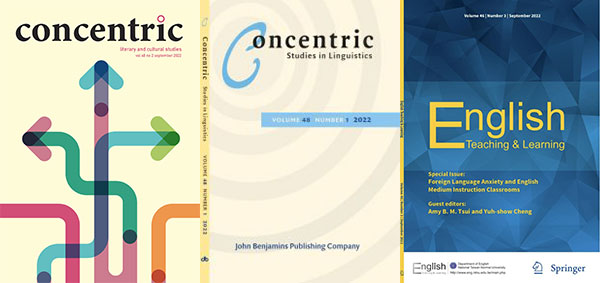

|
|
| Learning English in a Virtual World – Immersive vocabulary learning is effective |
|
| Dr. Hao-Jan Chen and his team develop Cool English. The inclusion of abundant videos, self-developed learning materials, and engaging games makes Cool English a welcome site for English learners. It now has more than 1.2 million registered users with nearly 150 million visits. In addition to the learners, Cool English has more than 20,000 teacher users now, who can manage their own classes to assign students their assignments, track their participation, and view their assignment scores via the website. |
| Know more |
|
| NTNU’s language technology makes teaching and learning more enjoyable, easy, and effective |
|
| SmartReading-Mandarin provides many e-books written by professional teaching teams on the reading platform. In addition to grading vocabulary marking, there are also audiobook functions available. Chinese learners improve their Chinese reading ability in a relaxed and interesting way. |
| Know more |
|
| Academic Journals Published by National Taiwan Normal University |
|  |
● Concentric: Literary and Cultural Studies
The journal is indexed in Scopus, Arts & Humanities Citation Index (A&HCI)
● Concentric: Studies in Linguistics
Starting from 2019, the journal cooperates with John Benjamins Publishing Company and is relaunched as a partially open access journal.
● English Teaching & Learning
It is the first scholarly journal in Taiwan dedicated solely to research on the teaching and learning of English as a second or foreign language. |
| Know more |
|
Contact Us
Email: ntnutop@deps.ntnu.edu.tw
Chinese Language and Technology Center (CLTC)
National Taiwan Normal University, Taiwan |
 |
 |
|
|